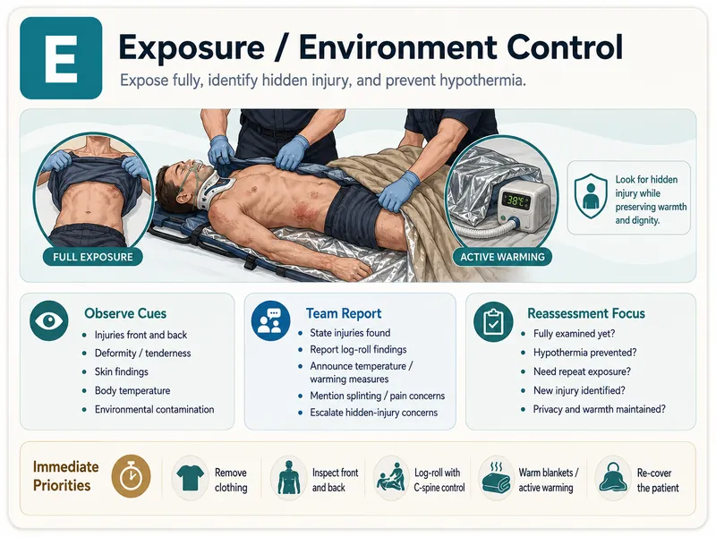

课堂学习 · 2026-10 更新Classroom learning · October 2026 update
二次/三次评估与漏诊Secondary/tertiary survey and missed injury
把“还没看”和“还不能排除”留在清单里；每个待办都要有下一位责任人。Keep unexamined regions and unresolved possibilities visible, with an owner for every pending task.
来源与审核记录Sources and review record
预计学习Estimated learning time · 35 分钟min
学完这门课，你能……After this course, you can…
- 在状态允许时完成 AMPLE 和头到脚评估。Complete AMPLE and head-to-toe assessment when condition permits.
- 把未检查、检查不可靠和待回报结果列成清单。List unexamined regions, unreliable assessments and pending results.
- 安排三次评估并闭环处理新症状和遗漏风险。Arrange tertiary review and close the loop on new symptoms and missed-injury risk.
实习：识别与报告；规培：决策时机与监督下关键步骤；青年主治：团队指挥与资源调度。Intern: recognize/report; resident: decision timing and supervised key steps; early attending: team leadership and resources.
课前测 · 5 题Pretest · five questions
01
先确认状态允许，再补全 AMPLEConfirm readiness, then complete AMPLE
- 二次评估在初评与复苏推进、患者状态允许时开展；恶化立即回到 xABCDE。Undertake the secondary survey when primary assessment/resuscitation and condition permit; deterioration returns attention to xABCDE.
- A 过敏；M 用药（尤其抗凝）；P 既往史/妊娠；L 最后进食；E 事件与环境。A allergies; M medicines, especially anticoagulants; P past history/pregnancy; L last meal; E events/environment.
- 患者无法提供时，从院前团队或家属补充，并注明来源与可靠性。Use EMS or family information if the patient cannot provide history, noting source and reliability.

02
头到脚查体，明确检查限制Head-to-toe examination with explicit limits
- 头面颈、胸腹骨盆、四肢、神经血管、皮肤与背部系统核对。Systematically review head/face/neck, chest/abdomen/pelvis, limbs, neurovascular status, skin and back.
- 在保护、保暖、镇痛与隐私条件下完成；不能完成的区域先记录。Work with protection, warmth, analgesia and privacy; record regions that cannot yet be examined.
- 避免反复挤压疑不稳定骨盆；对阳性发现或不可靠查体安排补查。Avoid repeated springing of a potentially unstable pelvis; arrange follow-up for abnormal or unreliable findings.
03
三次评估：重新看，核对全部证据Tertiary survey: re-examine and reconcile evidence
- 患者稳定及可配合后重新问诊查体，结合清醒、镇静变化和活动后的新主诉。Repeat history/examination when stable and able to participate, incorporating new symptoms as alertness, sedation or mobility change.
- 核对影像最终报告、化验、会诊和操作前后记录，追踪待回报结果。Reconcile final imaging, laboratory results, consultations and records around interventions; track pending results.
- 由本地流程规定时点（常在入院后首日组织），出院/转科前再次核对未解问题。Local policy defines timing, often within the first inpatient day; reconcile unresolved concerns again before transfer/discharge.
展开教学说明Teaching detail
三次评估不是“24 小时后再处理新症状”。任何新主诉或恶化都即时触发针对性复查；该任务需要明确负责团队与补查安排。儿童参考来源只支持儿童适用内容，成人组织时点由本地创伤流程确认。Tertiary review does not mean waiting 24 hours to address new symptoms. New complaints or deterioration prompt assessment, with a named team and plan. Pediatric references support pediatric content only; local adult trauma policy defines scheduling.
防漏诊交接核对单Missed-injury handover checklist
| 核对项目Item | 发现 / 限制 / 待办Finding / limit / task | 责任人 / 时点Owner / timing |
|---|---|---|
| AMPLE 补全Complete AMPLE | ||
| 未检查/不可靠部位Unexamined/unreliable regions | ||
| 神经血管与新主诉Neurovascular findings/new symptoms | ||
| 影像最终报告Final imaging reports | ||
| 三次评估与出院核对Tertiary survey/discharge reconciliation |
依据与适用范围Sources and scope
- WFSA：成人重大创伤评估（AMPLE、二次评估与复评）WFSA: adult major trauma assessment (AMPLE, secondary survey and reassessment)
- RCH 创伤手册：初评与二次评估（儿童）RCH trauma manual: primary/secondary survey (pediatric)
- Starship：二次与三次评估（儿童）Starship: secondary/tertiary survey (pediatric)
- 成人三次评估研究：24 小时策略的局限Adult tertiary-survey study: limits of a 24-hour policy